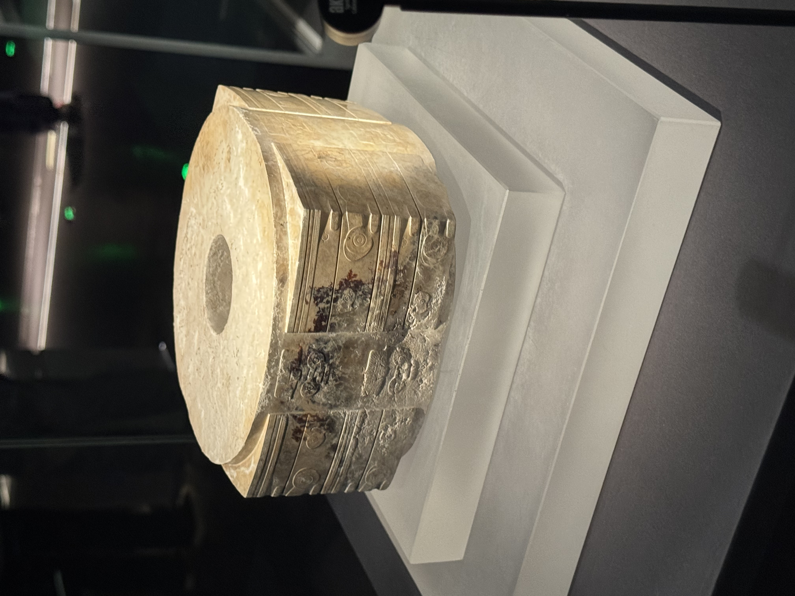
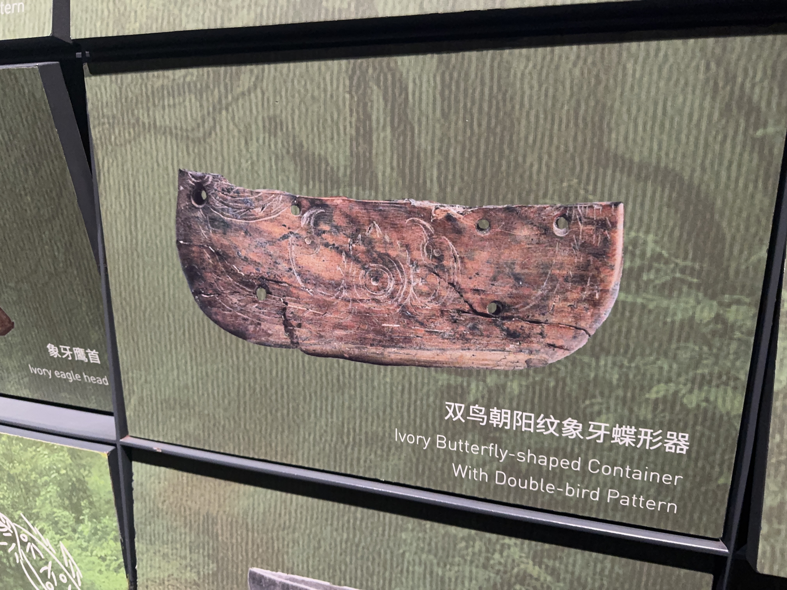
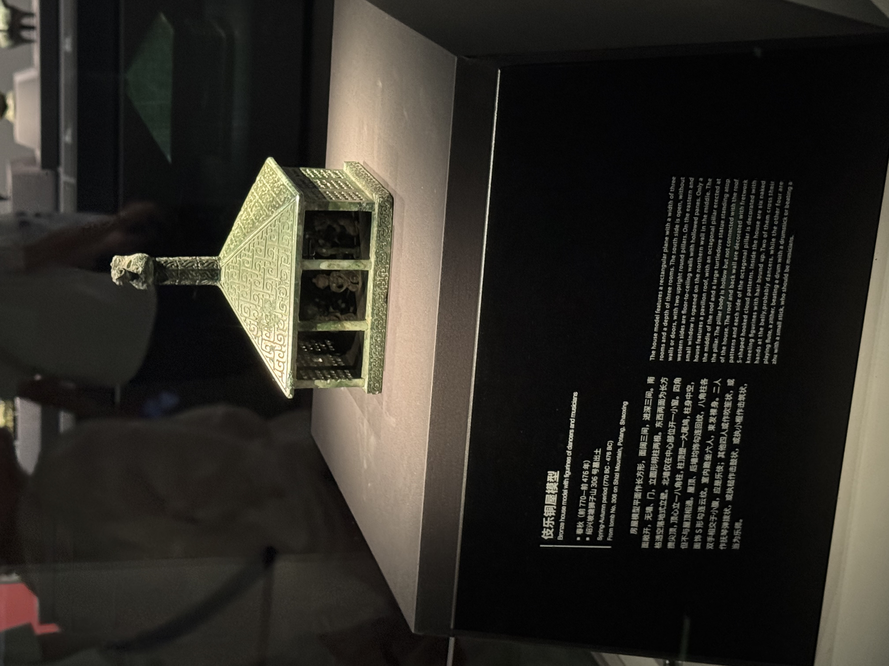
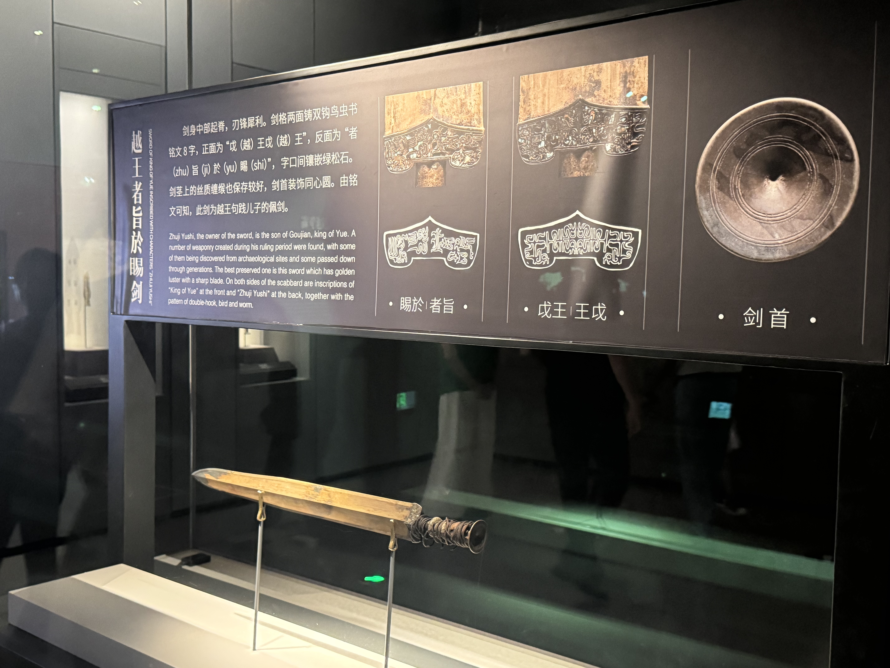
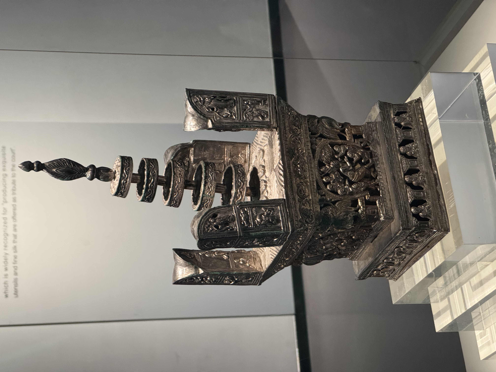
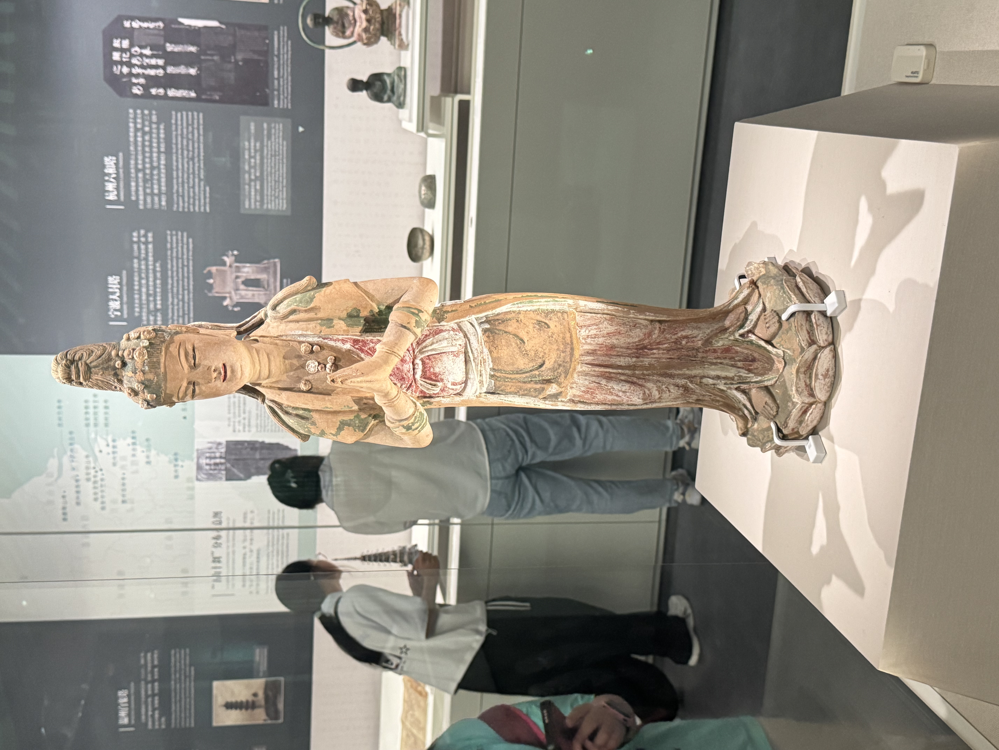
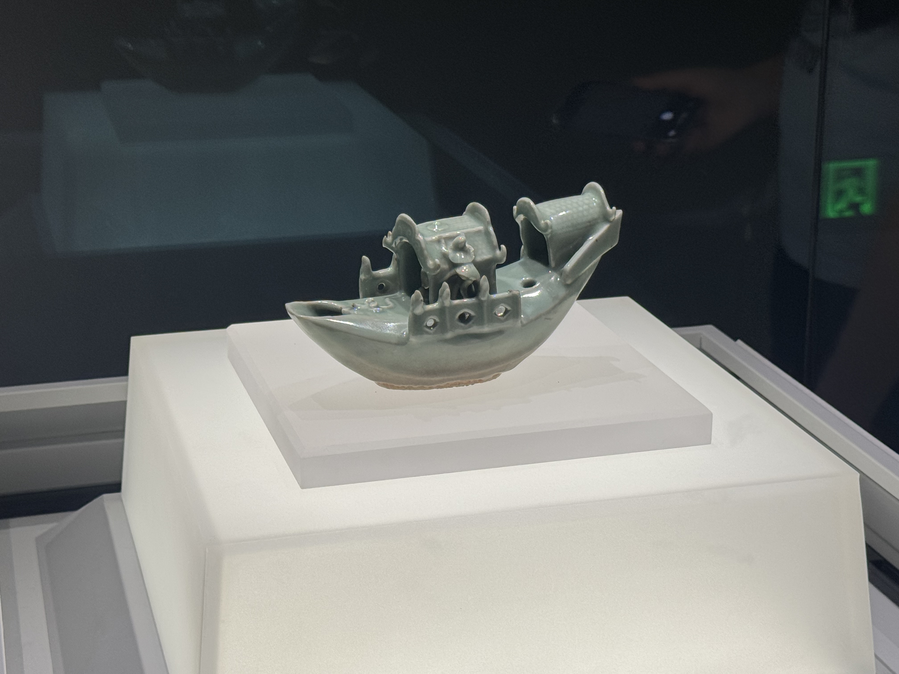
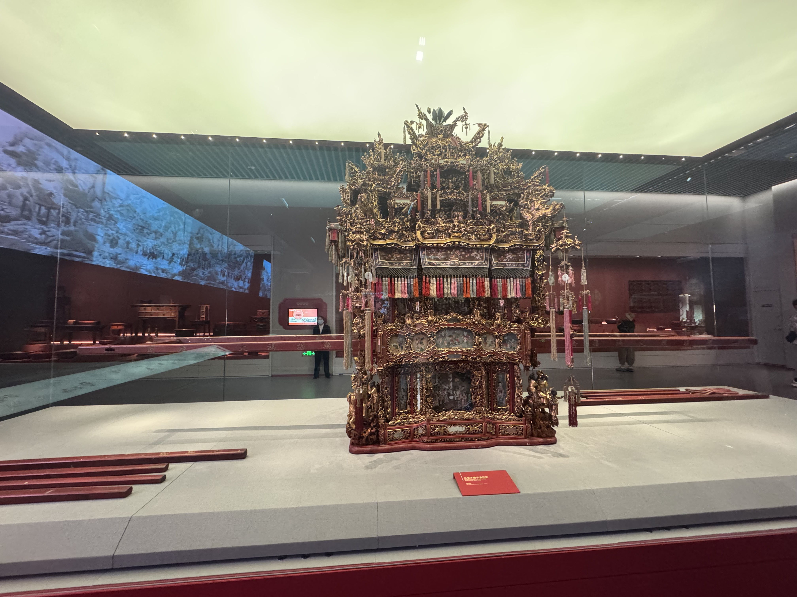
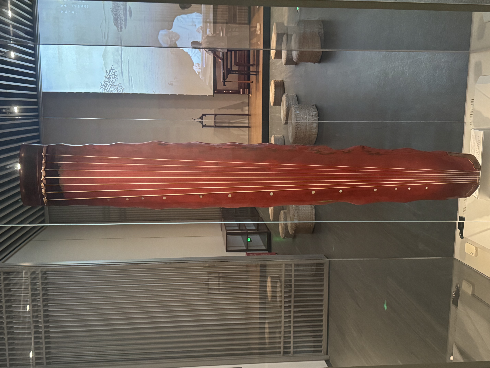
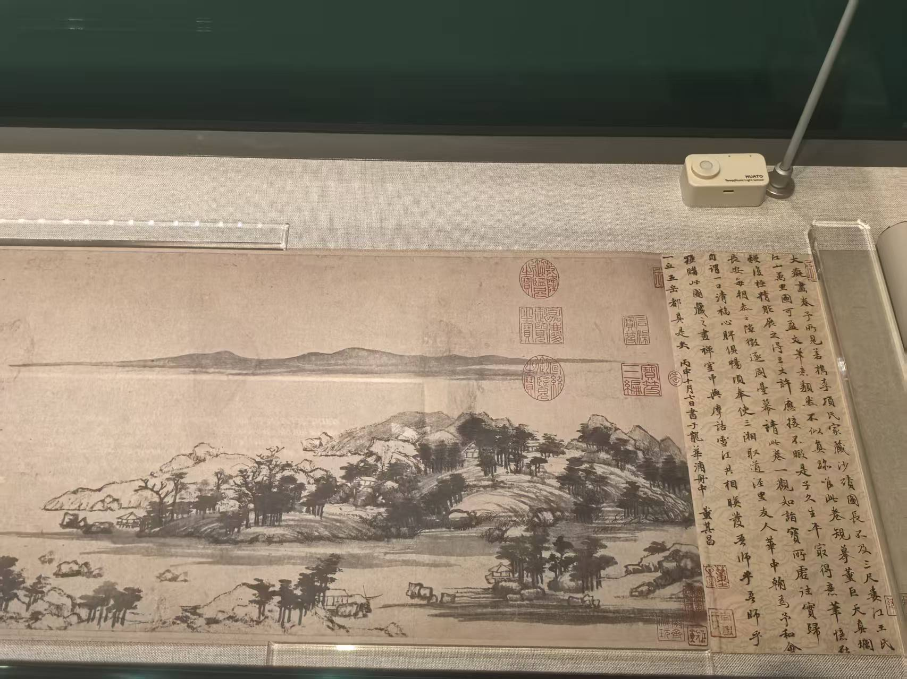

点击空白处或按 Esc 关闭
基于浙江省博物馆（之江馆区）的调研成果整理
本资料库为2026年浙江工业大学经济学院暑期社会实践成果之一，旨在通过图文结合的方式，系统整理浙江省博物馆之江馆区的代表性文物与展览信息，为后续浙江历史文化研究、文化科普传播提供资料支持。

出土于浙江余杭反山遗址，是目前所见良渚文化玉琮中体量最大、纹饰最精美的一件。琮体四面雕刻神人兽面纹，体现了良渚先民高超的玉器工艺和复杂的精神信仰，是实证中华五千多年文明史的重要物证。

出土于浙江余姚河姆渡遗址，以象牙雕刻而成。画面中央为火焰状太阳纹，两侧各有一只引颈昂首的鸟，构图对称，线条流畅，反映了河姆渡先民的太阳崇拜和原始审美意识。

出土于浙江绍兴坡塘，是一座青铜质地的房屋模型。屋内跪坐六名乐伎，分别作击鼓、弹琴、吹笙等姿态，是研究越国音乐文化、建筑形态和礼乐制度的重要实物资料。

越王勾践之子鼫与（者旨於睗）的佩剑。剑身刻有鸟虫书铭文，剑格镶嵌绿松石，历经两千余年仍寒光逼人，体现了越国高超的青铜铸造技术，是越地历史的标志性文物。

出土于杭州雷峰塔地宫，为吴越国时期所造。塔身通体鎏金，四面雕刻佛本生故事和菩萨像，工艺精湛，是吴越国崇佛文化的集中体现，也是研究五代时期金银器制作和佛教艺术的重要文物。

出土于温州白象塔。菩萨面容温婉，体态修长，衣饰流畅，彩绘保存较好，体现了宋代佛教造像世俗化、生活化的审美倾向，是宋代彩塑艺术的精品。

造型为一叶扁舟，舱内两人对坐，船篷、船舷刻画细致。釉色青翠温润，是龙泉窑青瓷中的珍品，既具实用功能，又有极高的艺术观赏价值，反映了元代浙江青瓷工艺的巅峰水平。

又称“花轿”，因制作需耗费上万工时而得名。轿身采用朱金木雕工艺，装饰有戏文故事、花鸟瑞兽等题材，金碧辉煌，是浙东地区传统婚俗文化的代表性器物，体现了浙江民间工艺的精湛水平。

唐代古琴，为著名斫琴师雷威所制。琴身髹漆，琴背刻有“彩凤鸣岐”铭文，音色清越悠远，是唐代古琴艺术的代表作，也是研究中国古代音乐史的重要实物。

元代画家黄公望所作山水长卷，以富春江为背景，笔墨苍润，意境深远，被誉为“中国十大传世名画”之一。此卷历经火殉分为两段，浙江省博物馆所藏为前段“剩山图”，是浙江文化的瑰宝。